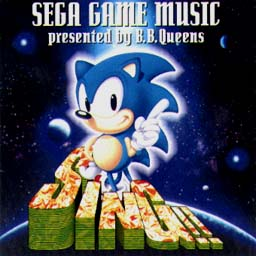
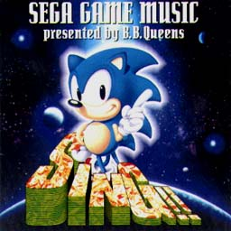

SING!!
SEGA GAME MUSIC
Presented by B.B.Queens


SING!!
SEGA GAME MUSIC
Presented by B.B.Queens

|
発売元：BMGビクター株式会社 |
|
MEGA-CD用のゲーム「テディ・ボーイ・ブルース」の他、様々なゲームの曲がヴォーカルソングにアレンジされて収録されている。 |
|
・次の作品を見てみたいっす!! ・関連CD＜国内編＞のページへ ・Music CDのページへ ・Sound Web Siteのトップページへ |